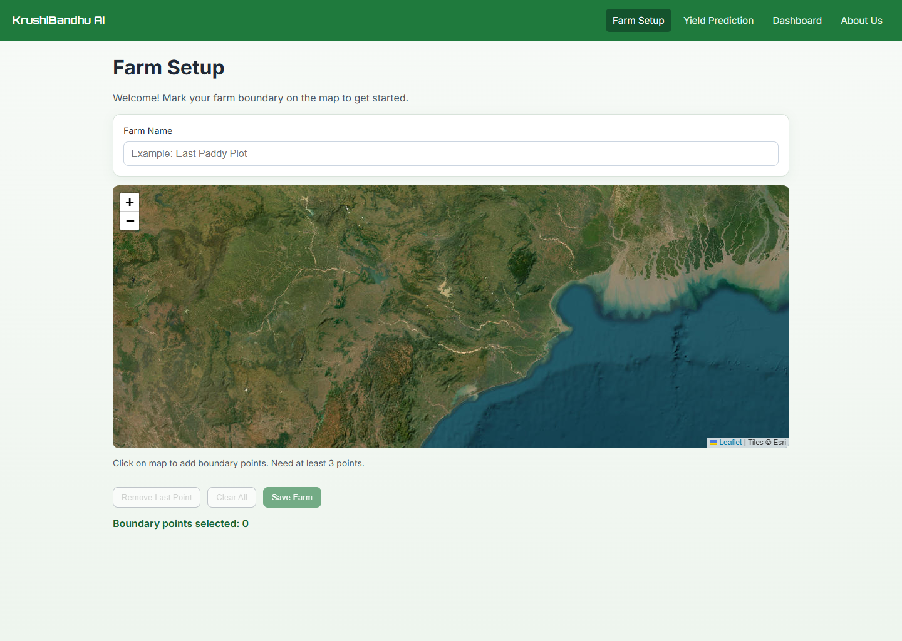
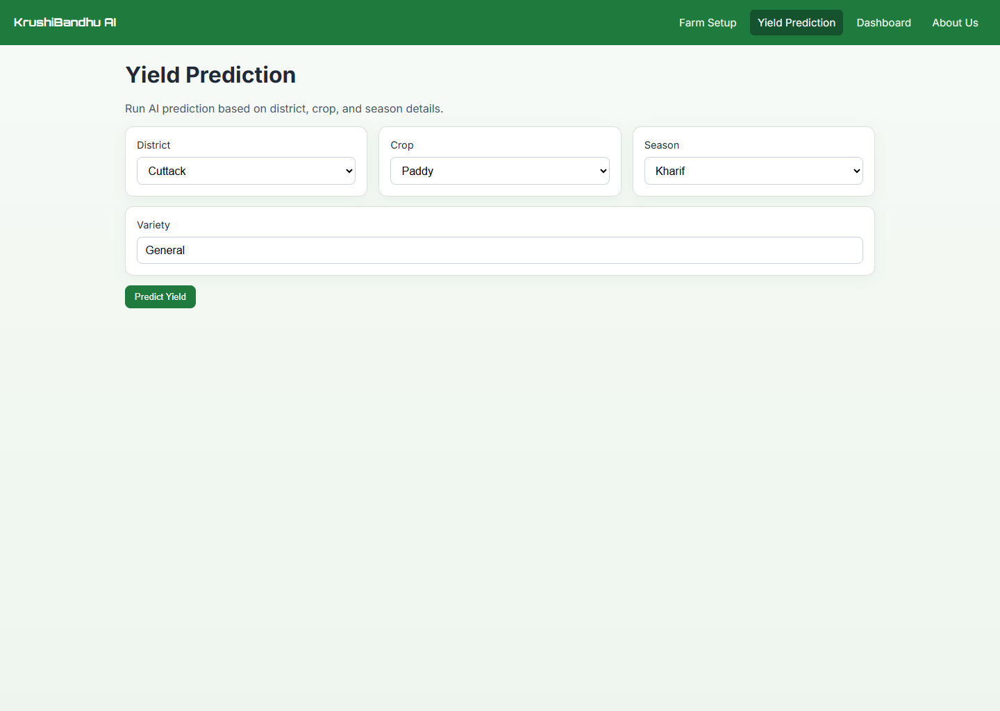

KrushiMitra explores how a farmer-facing yield tool could collect district, crop, rainfall, and temperature context without demanding specialist hardware or a desktop workflow.
The engineering contribution is a versioned service boundary: typed React form → Pydantic validation → FastAPI scenario service → structured response. A benchmarked model can replace the current adapter without changing the interface contract. The public path still uses illustrative output, so this case study makes no accuracy claim.
Tech Stack
Geospatial setup and typed scenario input


How the System is Built
Curated historical records → leakage-safe temporal split → baseline comparison → calibrated uncertainty → agronomic review.
Typed form state → API request → response card with a predicted range, historical comparison, and explanatory factors.
From farm context to response contract
Capture farm and categorical context
The React application records a farm polygon, district, crop, season, and variety through constrained components instead of free-form model parameters.
farm_geometry + district + crop + season + variety
Validate a typed request
FastAPI receives the scenario, validates numeric ranges and categorical inputs, and converts the frontend payload into a stable service contract.
React form → Pydantic schema → scenario service
Return an illustrative scenario
The current public implementation uses mock prediction logic to exercise the end-to-end interaction. It is an interface prototype, not a validated agricultural model.
Current status: product prototype · benchmark pending
Contextualised Output
The response contract reserves fields for an estimate, interval, historical comparison, explanatory factors, and model status so future validation does not require an interface rewrite.
{ estimate, range, comparison, factors, model_status }
A replaceable prediction adapter behind a stable interface
| Subsystem | Source area | Responsibility | Current state |
|---|---|---|---|
| Farm boundary | MapPicker.tsx | Capture and persist polygon coordinates | Interactive Leaflet map |
| Scenario form | YieldPredictionPage.tsx | Constrain district, crop, season, and variety | Typed React state |
| API client | shared/api/api.ts | Serialize requests and normalize failures | FastAPI adapter |
| Model artifacts | models/*.pkl | Persist estimator, encoders, and feature order | Repository artifacts; benchmark not frozen |
| Data services | backend/*engine.py | Weather, market, and database context | Integration modules under development |
Challenges & Solutions
Prediction claims arrived before validation
The interface made it easy to present model-like output before a trustworthy dataset, temporal evaluation, and calibrated uncertainty were in place.
Made model status explicit
The portfolio and case study now label the project as a prototype. A future promotion requires a documented dataset, reproducible baselines, and out-of-time validation.
Complex inputs for a broad audience
Weather and crop context can quickly become an intimidating form, especially on a small screen.
Mobile-first component flow
Used React, TypeScript, Radix primitives, and constrained controls to keep the scenario workflow responsive and understandable.
A future model must generalize across time
Random splitting would overstate performance when weather patterns and agricultural practices drift across seasons.
Define a temporal benchmark first
The next validation milestone is an out-of-time comparison against district and crop baselines, followed by uncertainty calibration and agronomic review.